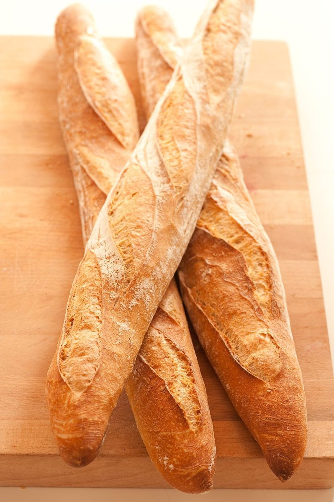

パン屋 / 大分県日田市
nicori
大分県日田市三和にあるパン屋「nicori」のご案内ページです。営業時間やメニューなど、詳しいことは準備中。まずはInstagramをのぞいてみてください。


制作側の連想
ちぎり絵びより
店名の由来は分かりません。制作側は「nicori」という響きから、色紙を手でちぎって貼り重ねる「ちぎり絵」を連想しました。パンを手でちぎる動きにも、どこか重なります。そこでこのページは、ちぎった紙の縁(ふち)と色の重なりで組んでいます。制作側の連想で、お店の理念・由来とは無関係です。
パンのイメージ
小麦から、ちぎる前のかたちまで。
写真はお店のパンではありません。パンの雰囲気を伝えるための、国外・撮影地不明のフリー素材です。



ご案内
お店のこと(確認できたものだけ)
| 所在地 | 〒877-0000 大分県日田市三和643-4 |
|---|---|
| 電話 | なし |
| 営業時間 | 準備中 |
| 定休日 | 準備中 |
| ご予約 | 準備中 |
| 駐車場 | 準備中 |
| SNS | Instagram @nicori_4025 |